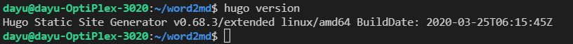

2. Install Hugo
How to install Hugo on Ubuntu.
Hugo is one of the most popular open-source static site generators (https://gohugo.io/).
We’ll install it on Ubuntu.
Detailed Instructions:
- Step 1
Run update command to update package repositories and get latest package information.
sudo apt update
- Step 2
Run the install command to install the packages and dependencies.
sudo apt install hugo
- Step 3
Run hugo command to check the installation.
hugo version
- Step 4
Run hugo command to create a new site.
hugo new site word2mdThe above will create a new Hugo site in a folder named word2md.